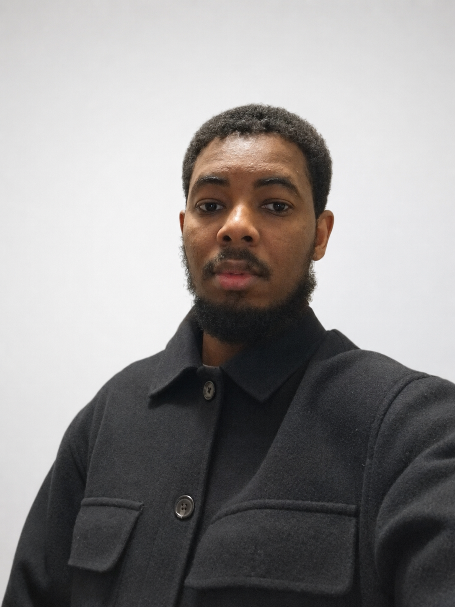

Modélisation, calcul scientifique, statistiques & data science. Je transforme des problèmes concrets en modèles quantitatifs fiables.
Diplômé en octobre 2026 du Master Mathématiques Appliquées (MApI3) à l'Université Toulouse III – Paul Sabatier.
Je conçois des modèles quantitatifs pour résoudre des problèmes concrets : modélisation et simulation numérique, méthodes numériques (EDP), optimisation, statistiques et analyse d'incertitude, ainsi que data science et machine learning. J'ai éprouvé ces compétences lors de deux expériences en laboratoire de recherche, où j'ai construit des chaînes de traitement complètes — de la donnée brute au modèle validé. Rigueur scientifique, autonomie et restitution claire des résultats me caractérisent. Je recherche un poste en ingénierie scientifique, R&D, études ou data, partout en France.
Conception d'un modèle prédictif multimodal reliant la microstructure d'un matériau à ses propriétés mécaniques, à partir de trois sources de données hétérogènes (mesures, images microscopiques, descripteurs chimiques). Conception de la base de données du projet, prétraitement, modélisation, validation croisée et restitution aux chercheurs. Livrable : un cadre de prédiction réutilisable pour les futures campagnes d'essais.
Développement d'outils d'analyse et d'interprétabilité de modèles de vision par ordinateur (cartes d'activation, importance des variables), un enjeu clé de fiabilité et de confiance des modèles. Création de tableaux de bord interactifs de classification d'images pour les équipes de recherche.
Implémentation et benchmark de modèles (RNN, LSTM, GRU) pour la prévision de séries temporelles, dont des séries financières, et la génération de séquences.
Reconstruction d'images couleur (capteur de Bayer) évaluée par les métriques PSNR/SSIM ; étude de la robustesse statistique par simulations de Monte-Carlo et bootstrap.
Université Toulouse III – Paul Sabatier · diplôme prévu en octobre 2026
Université Toulouse III – Paul Sabatier
Disponible en CDI ou CDD, partout en France. N'hésitez pas à me contacter.